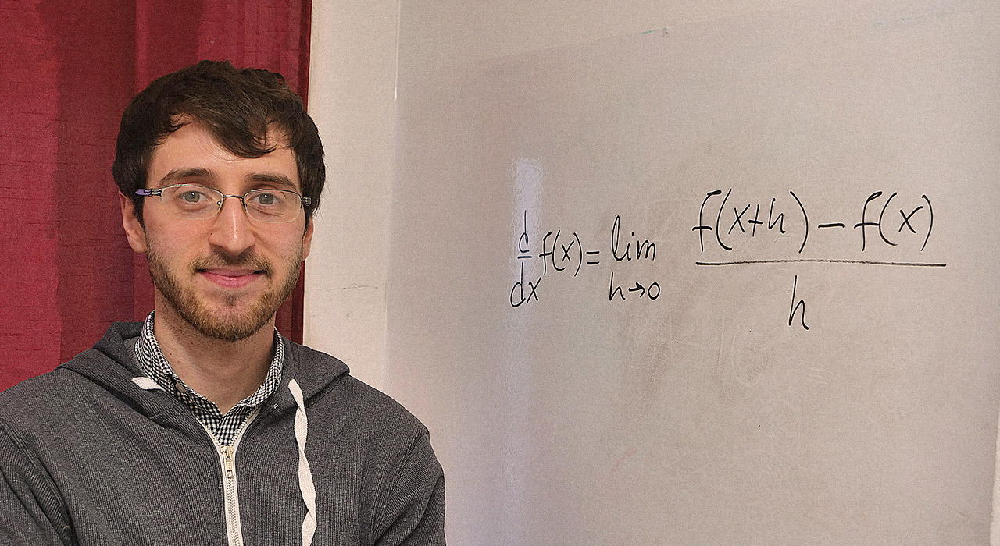

ASOCIACIÓN HISPANOHABLANTES LATINOAMERICANOS
ASOCIACIÓN HISPANOHABLANTES LATINOAMERICANOS
¿Qué son las matemáticas?
La matemática es la ciencia de la estructura, el orden y los patrones repetitivos que se basa en contar, medir y describir las formas. Su objeto de estudio son las magnitudes, las cantidades y los cambios de estas en el tiempo y el espacio.
La palabra "matemática" deriva del griego máthëma que significa "aprendizaje, conocimiento". Mucha de la matemática que aprendemos actualmente en la escuela tiene como finalidad prepararnos para ser mejores ciudadanos, pues nos enseñan a pensar de forma razonada.
En la vida diaria, usamos el razonamiento matemático sin darnos cuenta. Probablemente, los primeros matemáticos fueron carpinteros, constructores y agricultores buscando la forma de mejorar su trabajo.
Fundamentos de la matemática
La matemática es abstracta e imaginativa. Se fundamenta en:
- Conceptos intuitivos: este es el conocimiento que obtenemos por intuición sin tener un conocimiento previo. Por ejemplo, el espacio, la materia, la cantidad y el orden.
- Definiciones: expresan lo general con los componentes. Por ejemplo: un cuadrado (general) es un polígono de cuatro lados (componentes).
- Postulados: un postulado es una verdad intuitiva que tiene suficiente evidencia para ser aceptada como tal. Por ejemplo, la suma de dos números es única. 2+2 siempre será 4.
- Teorema: es una verdad no evidente, pero demostrable. Por ejemplo, si un número termina en cero o en cinco es divisible por cinco.
- Problema: es una cuestión práctica en la que hay que determinar cantidades desconocidas llamadas incógnitas, por medio de sus relaciones con cantidades conocidas o datos del problema. Por ejemplo, ¿cuántos lápices usa un estudiante en un mes, si tiene que cambiar de lápiz cada cuatro días?
Recursos
Traductor de Ingeniería
Con un pizarrón y una fibra, Damián Pedraza vive de enseñar matemática a millones de personas en YouTube Es ingeniero electrónico y ama enseñar. Las clases que graba en La Plata ya fueron vistas por más de 6 millones de usuarios en Argentina y América Latina.
Algunos de sus videos más relevantes:
Las Fórmulas que Memorizaste NO Funcionan Siempre
Ver en YouTubeTe Muestro Cómo Pienso la Matemática
Ver en YouTubeTe Muestro Cómo Hago los Cálculos Combinados
Ver en YouTubeAnálisis Matemático para Pensar, por Lic. María Inés Baragatti
Ver en YouTubeDerivando
El canal Derivando surgió en 2015 de la mano de la productora Tuiwok (Endemol Beyond) con el objetivo de divulgar la cultura matemática, como una celebración de las matemáticas.